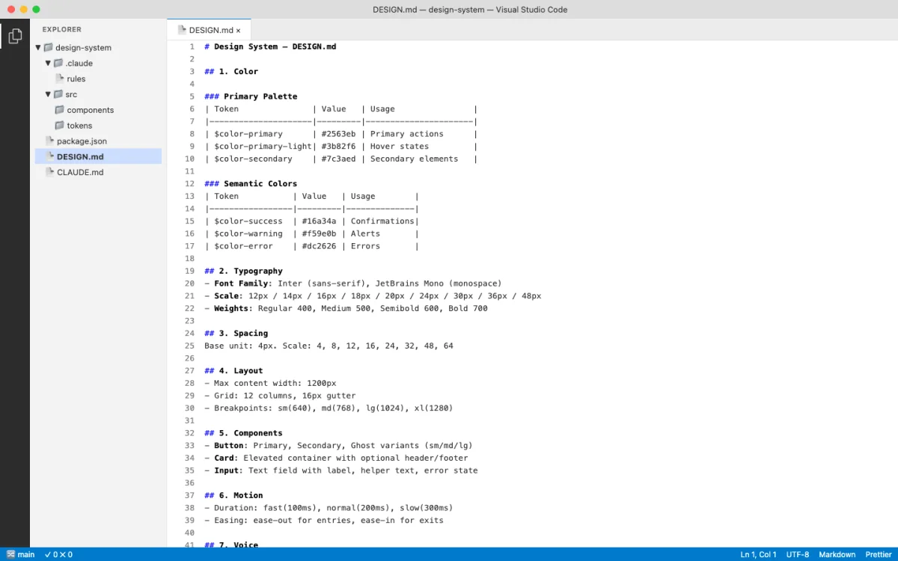
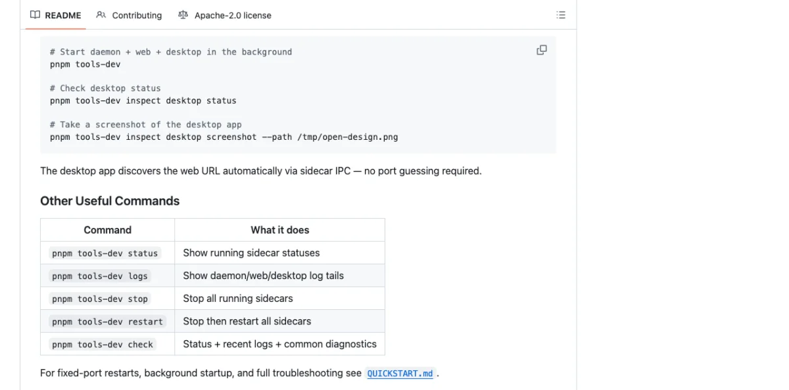
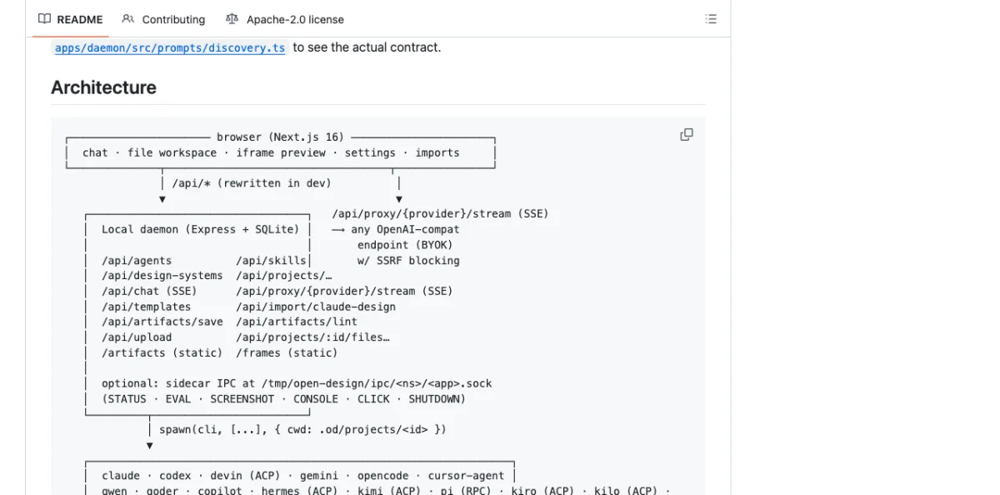
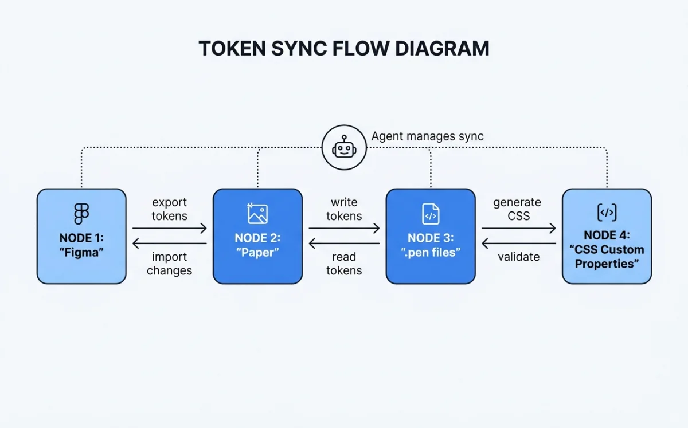

Design Systems as Code: The DESIGN.md Schema
The DESIGN.md schema started at awesome-design-md and became the de facto standard for machine-readable design systems. It's a Markdown file with 9 sections that any agent can parse and apply:

- Color --- brand palette, semantic colors, forbidden colors
- Typography --- display, body, mono font stacks with sizes and weights
- Spacing --- margin/padding scale, grid units
- Layout --- breakpoints, container widths, grid system
- Components --- button variants, card styles, form elements
- Motion --- transitions, durations, easing curves
- Voice --- tone, language patterns, copy guidelines
- Brand --- logo usage, imagery style, photography direction
- Anti-patterns --- what not to do, forbidden combinations
# Payflow Design System
## Color
- Primary: #4F46E5
- Secondary: #1E293B
- Background: #FFFFFF
- Surface: #F8FAFC
- Text Primary: #1E293B
- Text Secondary: #64748B
- Accent: #06B6D4
- Error: #EF4444
- Success: #22C55E
- Forbidden: never use pure black #000000 for text
## Typography
- Display: 'Payflow Sans', -apple-system, sans-serif, 700
- Heading: 'Payflow Sans', -apple-system, sans-serif, 600
- Body: 'Payflow Sans', -apple-system, sans-serif, 400
- Mono: 'Payflow Mono', 'SF Mono', monospace, 400
## Spacing
- xs: 4px
- sm: 8px
- md: 16px
- lg: 24px
- xl: 32px
- 2xl: 48px
## Layout
- Max width: 1200px
- Grid: 12 columns
- Breakpoints: mobile 640px, tablet 768px, desktop 1024px
## Components
- Button primary: bg-primary, text-white, rounded-lg, px-md py-sm
- Card: bg-surface, rounded-xl, shadow-md, p-lg
- Input: border-gray-300, rounded-lg, px-md py-sm
## Motion
- Fast: 150ms ease-out
- Normal: 250ms ease-out
- Slow: 350ms ease-out
## Voice
- Tone: professional but approachable
- Language: active voice, direct sentences
## Brand
- Logo: always on white/dark backgrounds, minimum 24px height
- Imagery: abstract geometric patterns, no stock photography
## Anti-patterns
- Never use gradient fills on text
- Never pair sans-serif heading with serif body
- Never animate layout properties (width, height, top, left)That anti-patterns section is critical. Most design system documentation tells you what to do. The anti-patterns section tells the agent what not to do. In practice, this is more valuable. Agents are prone to falling back to defaults. Explicit prohibitions prevent that.
The schema works because it's Markdown. Agents read Markdown natively. No JSON parsing. No API calls. No SDK integration. The DESIGN.md file sits in your repo, and any agent that can read files can consume it.
// Agent prompt to read a design system
"Read DESIGN.md from the repo root. Generate a pricing page
that uses the exact colors, fonts, spacing, and component styles
defined in the design system. Do not invent any values."Open Design's 129-System Library
Open Design (covered in Chapter 06) ships 129 design systems using the DESIGN.md schema. The breakdown:

- 2 hand-authored starter systems
- 70 product design systems from awesome-design-md
- 57 design skills from awesome-design-skills
The 70 product systems include real brand systems: Linear, Stripe, Vercel, Airbnb, Tesla, Notion, Anthropic, Apple, Cursor, Supabase, Figma, Resend, Raycast, Cohere, Mistral, ElevenLabs, Spotify, PostHog, Sentry, MongoDB, and roughly 50 more.
Each system shows its 4-color signature in the picker. Click for the full DESIGN.md, a swatch grid, and a live showcase. The catalog endpoint at GET /api/skills lists available systems programmatically.
| Category | Count | Source |
|---|---|---|
| Starter systems | 2 | Hand-authored for Open Design |
| Product design systems | 70 | awesome-design-md |
| Design skills | 57 | awesome-design-skills |
| Curated visual directions | 5 | Deterministic OKLch palettes + font stacks |
When no brand design system exists, Open Design falls back to 5 curated visual directions, each with a deterministic OKLch palette and matched font stack:
Editorial Monocle — serif font stack, warm OKLch palette
Modern Minimal — sans-serif font stack, neutral OKLch palette
Warm Soft — humanist font stack, warm OKLch palette
Tech Utility — monospace-leaning font stack, cool OKLch palette
Brutalist Experimental — display font stack, high-contrast OKLch paletteSwitch the design system and the next render uses the new tokens immediately. This is the key insight: "Design Systems are portable Markdown, not theme JSON." Every artifact reads from the active system at generation time.
The most-used systems in the library, based on community activity:
| Design System | Brand | Signature |
|---|---|---|
| Linear | Linear (productivity) | Purple accent, dark-first, sharp corners |
| Stripe | Stripe (payments) | Purple primary, white surfaces, isometric illustrations |
| Vercel | Vercel (developer tools) | Black/white, monospace accents, gradient borders |
| Notion | Notion (productivity) | Warm blacks, serif headings, illustration style |
| Apple | Apple (hardware/software) | San Francisco, rounded corners, spacious layouts |
| Anthropic | Anthropic (AI research) | Earthy tones, serif display, academic feel |
| Spotify | Spotify (music) | Green accent, bold typography, dark backgrounds |
| Resend | Resend (email API) | Dark theme, green accents, code-forward aesthetic |
Syncing Tokens Between Tools
Design tokens need to flow between tools. A color defined in Figma must appear identically in Paper, in your codebase, and in generated HTML. The synchronization strategy depends on which tools you're connecting.

Figma to Paper requires dual MCP servers in the same agent session. The Figma MCP reads variables and styles. The Paper MCP writes them to the Paper canvas.
"I have a design system in Figma with colors and text styles.
Please create a matching design system sticker sheet in Paper
using the same tokens. The element with the variable applied
is selected in Figma."The agent reads Figma tokens via the Figma MCP, then writes to Paper via the Paper MCP. Chapter 10 covers the MCP configuration in detail.
Gotchas with Figma-to-Paper sync:
| Issue | Cause | Fix |
|---|---|---|
| SVG fills become images | Figma exports SVG fills as embedded raster | Use fill color tokens instead of SVG imports |
| Spacer elements ignored | Figma spacers have no visual output | Map spacer values to padding tokens manually |
| Code-connected components unreliable | Figma's code connect feature has sync gaps | Verify component output against source manually |
Figma to Code is simpler. The agent reads Figma variables via the Figma MCP and generates CSS custom properties directly.
:root {
--color-primary: #4F46E5;
--color-secondary: #1E293B;
--color-background: #FFFFFF;
--color-surface: #F8FAFC;
--color-text: #1E293B;
--color-text-secondary: #64748B;
--color-accent: #06B6D4;
--spacing-xs: 4px;
--spacing-sm: 8px;
--spacing-md: 16px;
--spacing-lg: 24px;
--spacing-xl: 32px;
--font-display: 'Payflow Sans', -apple-system, sans-serif;
--font-body: 'Payflow Sans', -apple-system, sans-serif;
--font-mono: 'Payflow Mono', 'SF Mono', monospace;
--radius-sm: 4px;
--radius-md: 8px;
--radius-lg: 12px;
}Paper to Code uses the Paper MCP's get_computed_styles and get_jsx tools. The agent reads the design from Paper, extracts token values, and generates matching code tokens.
// Agent prompt for Paper-to-code token extraction
"Read the design from Paper. Extract all colors, fonts, and
spacing values into CSS custom properties. Generate a tokens.css
file that matches the Paper design exactly."// Generated tokens.css from Paper design
:root {
--paper-color-hero-bg: oklch(0.95 0.02 260);
--paper-color-text-primary: oklch(0.15 0.02 260);
--paper-font-display: 'Instrument Serif', Georgia, serif;
--paper-font-body: 'Inter', -apple-system, sans-serif;
--paper-spacing-section: 96px;
--paper-spacing-content: 24px;
}Multi-source sync chains all of this together. Connect Figma MCP + Paper MCP + codebase access in a single agent session. The agent reads from Figma, writes to Paper, generates code, and verifies parity --- all in one conversation.
Design Variables in .pen and .op Files
Both Pencil (.pen files) and OpenPencil (.op files) support design variables. The mechanisms differ, but the goal is the same: tokens defined once, referenced everywhere.
Pencil (.pen) Variables
Pencil (Chapter 05) provides a variables system for design tokens inside .pen files. Variables map to CSS custom properties on export. Components and slots let you build reusable elements that reference these variables.
// .pen file variable structure (JSON)
{
"variables": {
"color-primary": "#4F46E5",
"color-background": "#FFFFFF",
"spacing-md": 16,
"radius-lg": 12
}
}When the agent generates UI from a .pen file, every token reference becomes var(--color-primary) in the output. Change the variable in the .pen file, and the exported code updates accordingly.
OpenPencil (.op) Variables
OpenPencil (Chapter 06) extends the concept with typed variables and multi-theme support.
{
"variables": {
"color-primary": { "type": "color", "value": "#4F46E5" },
"color-secondary": { "type": "color", "value": "#1E293B" },
"spacing-md": { "type": "number", "value": 16 },
"font-body": { "type": "string", "value": "Inter, sans-serif" }
},
"themes": {
"mode": {
"Light": { "color-background": "#FFFFFF" },
"Dark": { "color-background": "#1E293B" }
},
"density": {
"Compact": { "spacing-md": 12 },
"Comfortable": { "spacing-md": 16 }
}
}
}The theme axes are independent. Light + Compact, Dark + Comfortable, any combination. Variables reference values via $variable-name syntax in the .op file, which becomes var(--variable-name) in generated CSS.
// Theme switching in generated CSS from .op file
:root {
--color-background: #FFFFFF;
--color-text: #1A1A2E;
--spacing-md: 16px;
}
[data-theme="Dark"] {
--color-background: #1E293B;
--color-text: #F8FAFC;
}
[data-density="Compact"] {
--spacing-md: 12px;
}The generated CSS uses data-attribute selectors for theme switching. This is a deliberate choice: data attributes work without JavaScript. The browser applies the correct theme based on the attribute value, with no runtime cost. The design system remains purely declarative.
| Feature | Pencil (.pen) | OpenPencil (.op) |
|---|---|---|
| Variable types | Untyped values | Typed (color, number, string) |
| Theme support | Single theme | Multi-axis themes |
| Reference syntax | Variable name | $variable-name |
| CSS output | var(--name) |
var(--name) |
| File format | Design-as-code | Git-friendly JSON |
| Component reuse | Components + slots | Components + instances + overrides |
Generating Consistent UI from Design System Constraints
Reading a design system is one thing. Enforcing it during generation is another. Each tool takes a different approach.
Open Design: The agent picks a skill and a design system. The skill template enforces the system's tokens at generation time. Every color comes from the system's palette. Every font comes from the system's typography section. The agent doesn't get to invent values.
Huashu Design (Chapter 07): The Core Asset Protocol freezes brand knowledge into brand-spec.md. All generated HTML references var(--brand-*) CSS variables exclusively. The anti-slop rules prevent fallback to generic defaults.
:root {
--brand-primary: #4F46E5;
--brand-background: #FFFFFF;
--brand-ink: #1E293B;
--brand-accent: #06B6D4;
}
/* All generated HTML uses var(--brand-*) — never hardcoded values.
To change brand, update brand-spec.md, not individual HTML files. */OpenPencil: Style guides with 50+ built-in styles, tag-based fuzzy matching applied during AI generation. The agent writes a component, and OpenPencil matches it against the style guide to ensure consistency. The matching is tag-based and fuzzy, meaning it doesn't require exact name matches --- "primary button" matches "Button/Primary/Large" through similarity scoring.
The common thread across all tools: agents read the design system before generating anything. This "read before write" pattern is fundamental. An agent that generates UI without reading the design system first will produce generic output. An agent that reads the system first produces consistent output. The design system file --- whether DESIGN.md, brand-spec.md, or .op variables --- is the contract.
// Agent workflow: read system, then generate
// Step 1: Agent reads DESIGN.md
// Step 2: Agent extracts tokens into CSS variables
// Step 3: Agent generates UI referencing those variables
// Generated component using design system tokens
.pricing-card {
background: var(--color-surface);
border: 1px solid var(--color-border, oklch(0.85 0.02 260));
border-radius: var(--radius-lg);
padding: var(--spacing-lg);
font-family: var(--font-body);
transition: box-shadow var(--motion-normal);
}
.pricing-card:hover {
box-shadow: 0 4px 12px oklch(0.15 0.02 260 / 0.1);
}The enforcement pattern that works across all tools:
/* Anti-slop enforcement rules, common to all design-as-code tools */
/* 1. Never invent new colors outside the system */
/* BAD: color: #8B5CF6; (invented purple) */
/* GOOD: color: var(--color-accent); */
/* 2. Never use display fonts not in the spec */
/* BAD: font-family: 'Montserrat', sans-serif; */
/* GOOD: font-family: var(--font-display); */
/* 3. Never add decorative elements not justified by content */
/* BAD: decorative SVG divider between every section */
/* GOOD: spacing and typography alone create separation */
/* 4. Use oklch() or spec-existing colors only */
/* BAD: filter: hue-rotate(45deg); */
/* GOOD: color: oklch(0.7 0.15 250); *//* CSS Grid + text-wrap: pretty as quality signals */
.card-grid {
display: grid;
grid-template-columns: repeat(auto-fill, minmax(320px, 1fr));
gap: var(--spacing-lg);
}
.card-content {
text-wrap: pretty;
font-family: var(--font-body);
color: var(--color-text);
}Writing Your Own Design System for Agents
Based on the patterns across Open Design, Huashu Design, Pencil, and OpenPencil, here's how to write a design system that agents can actually use.

Start with the 9-section schema. Color, typography, spacing, layout, components, motion, voice, brand, anti-patterns. Even if some sections are thin, include them all. Agents expect the full structure.
Be specific. Exact HEX values, not "a shade of blue." Font stacks with fallbacks, not "a nice sans-serif." Pixel measurements, not "comfortable spacing."
Include anti-patterns. What not to do is as important as what to do. "Never use gradient fills on text" prevents more failures than "use solid fills."
Map every token to a CSS variable. The agent needs --color-primary, not just #4F46E5. The variable name is the contract between the design system and generated code.
Freeze brand assets. Logo paths, product images, UI screenshots --- not just colors. Huashu Design's brand-spec.md pattern is the reference implementation (Chapter 07).
Add theme variants. Light and dark at minimum. Compact and comfortable as a density axis if applicable. OpenPencil's multi-axis theme system is the most flexible model.
# My Product Design System
## Color
- Primary: #1A1A2E
- Accent: #E94560
- Background: #FFFFFF
- Surface: #F8F9FA
- Text: #1A1A2E
- Text Secondary: #6C757D
- Forbidden: never use #E94560 for large background areas
## Typography
- Display: 'Newsreader', Georgia, serif, 700
- Heading: 'Inter', -apple-system, sans-serif, 600
- Body: 'Inter', -apple-system, sans-serif, 400
- Mono: 'JetBrains Mono', 'SF Mono', monospace, 400
## Spacing
- xs: 4px
- sm: 8px
- md: 16px
- lg: 24px
- xl: 32px
## Layout
- Max width: 1120px
- Grid: 12 columns, 24px gutter
- Breakpoints: sm 640px, md 768px, lg 1024px, xl 1280px
## Components
- Button primary: bg-primary, text-white, rounded-md, px-md py-sm, font-heading
- Card: bg-surface, border-1 border-gray-200, rounded-lg, p-lg
- Input: border-gray-300, rounded-md, px-md py-sm, focus:ring-accent
## Motion
- Fast: 150ms ease-out
- Normal: 250ms ease-out
- Slow: 400ms ease-in-out
## Voice
- Tone: direct, technical, no hype
- Language: active voice, short sentences
## Brand
- Logo: SVG only, minimum 32px height
- Imagery: abstract geometric patterns, no stock photos
## Anti-patterns
- Never use box-shadow for elevation (use border instead)
- Never animate color properties (use opacity transitions)
- Never use emoji in UI copy
- Never center-align body text paragraphs:root {
--color-primary: #1A1A2E;
--color-accent: #E94560;
--color-background: #FFFFFF;
--color-surface: #F8F9FA;
--color-text: #1A1A2E;
--color-text-secondary: #6C757D;
--spacing-xs: 4px;
--spacing-sm: 8px;
--spacing-md: 16px;
--spacing-lg: 24px;
--spacing-xl: 32px;
--font-display: 'Newsreader', Georgia, serif;
--font-heading: 'Inter', -apple-system, sans-serif;
--font-body: 'Inter', -apple-system, sans-serif;
--font-mono: 'JetBrains Mono', 'SF Mono', monospace;
--radius-sm: 4px;
--radius-md: 6px;
--radius-lg: 8px;
--motion-fast: 150ms ease-out;
--motion-normal: 250ms ease-out;
--motion-slow: 400ms ease-in-out;
}Cross-Tool Token Parity Strategies
Maintaining token parity across Figma, Paper, Pencil, your codebase, and generated HTML is the operational challenge of design-as-code. Five strategies, from simplest to most robust:
1. DESIGN.md as single source of truth. Put the DESIGN.md in your repo. Every agent session reads it before generating anything. Other tools (Figma, Paper) are downstream consumers. Simple but requires manual sync.
2. MCP chaining for real-time sync. Connect Figma MCP + Paper MCP + codebase in one agent session. The agent reads from one source and writes to others. Real-time parity, but requires all MCP servers running simultaneously.
3. Export/import bridges. Figma exports tokens via its MCP. Paper reads them. Paper exports JSX with tokens. Your codebase imports it. Each bridge is a one-way sync point. Robust but adds pipeline complexity.
4. Git-based parity. DESIGN.md lives in the repo. CI verifies that generated CSS custom properties match the DESIGN.md values. Tokens diverge, build fails. Most reliable for teams with CI discipline.
5. Variable reference pattern. All generated code uses var(--token-name) instead of hardcoded values. The CSS variables file is generated from DESIGN.md. If the variable reference is present, the value is correct by construction. This is the pattern Huashu Design enforces.
/* Variable reference pattern — all tools converge here */
/* Generated from DESIGN.md, single source of truth */
:root {
--color-primary: #1A1A2E;
--color-accent: #E94560;
}
/* Agent-generated component — never hardcodes values */
.hero {
background: var(--color-primary);
color: var(--color-background);
padding: var(--spacing-xl);
font-family: var(--font-display);
border-radius: var(--radius-lg);
transition: transform var(--motion-normal);
}| Strategy | Complexity | Reliability | Best For |
|---|---|---|---|
| DESIGN.md as source | Low | Medium (manual sync) | Solo developers, small teams |
| MCP chaining | Medium | High (real-time) | Teams using Figma + Paper |
| Export/import bridges | Medium | Medium (pipeline) | Teams with CI pipelines |
| Git-based parity | High | High (automated) | Teams with strong CI discipline |
| Variable reference pattern | Low | High (by construction) | All teams --- combine with other strategies |
My take: The variable reference pattern is the foundation everything else builds on. If your generated code hardcodes #4F46E5 instead of var(--color-primary), no amount of DESIGN.md discipline will save you. Start there. Add MCP chaining or CI verification on top if your team size warrants it.
The direction system provides a fallback when no brand design system exists. Open Design's 5 curated directions --- Editorial Monocle, Modern Minimal, Warm Soft, Tech Utility, Brutalist Experimental --- each with deterministic OKLch palettes, give agents a consistent starting point. The key word is deterministic: the same direction always produces the same palette, which means the same prompt generates visually consistent output across sessions.
Next: Design systems give visual consistency. Motion gives temporal consistency. Chapter 09 covers programmatic video --- how agents produce animations, explainer videos, and motion design using Remotion and Hyperframes.